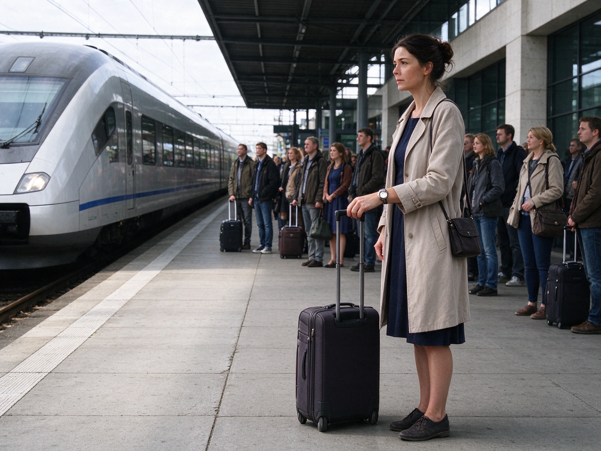

Betreff: Ihre Buchung Nr. 77421
Sehr geehrte Frau Weber,
vielen Dank für Ihre Buchung im Hotel Alpenblick. Hiermit bestätigen wir Ihr Doppelzimmer vom 20. bis 23. Dezember. Sie können ab 15 Uhr einchecken, am Abreisetag bitten wir Sie, das Zimmer bis 11 Uhr zu verlassen. Eine kostenlose Stornierung ist bis zum 13. Dezember möglich. Danach berechnen wir die erste Nacht. Frühstück ist im Preis enthalten und wird von 7 bis 10 Uhr serviert. Parkplätze sind vorhanden und kosten 8 Euro pro Nacht. Wir freuen uns auf Ihren Besuch.
Mit freundlichen Grüßen
Hotel Alpenblick
Die Audiodatei fehlt oder kann nicht geladen werden. Sie können „Hören beenden“ klicken und trotzdem die Aufgaben ansehen.
Aufgabe 1 · Ansagen am Telefon oder per LautsprecherSie hören jeden Text einmal. Zu jedem Text gibt es eine Aufgabe.
1
Wann sollen die Reisenden am Flughafen sein?
2
Was ist passiert?
3
Bis wann muss man das Zimmer verlassen?
4
Wo haben die Reisenden nach Stuttgart Anschluss?
Aufgabe 2 · Ansagen im RadioSie hören jeden Text einmal.
5
Wann scheint die Sonne wieder?
6
Wann kann man das Elefantenbaby sehen?
7
Wie lange ist die Ausfahrt gesperrt?
8
Was ist im Preis nicht enthalten?
9
Was kostet ein Bett pro Nacht?
Aufgabe 3 · GesprächeZu jedem Gespräch lösen Sie zwei Aufgaben.
Gespräch 1 · Zwei Freundinnen planen einen Urlaub.
10
Warum wollen sie nicht nach Spanien?
11
Die Frauen wollen mit dem Flugzeug an die Ostsee.
Gespräch 2 · Am Fahrkartenschalter.
12
Welche Fahrkarte kauft der Mann?
13
Der Mann hat eine Bahncard.
Gespräch 3 · Eine Frau ruft im Hotel an.
14
Wann kommt die Frau?
15
Der Parkplatz am Hotel ist kostenlos.
Gespräch 4 · Eine Familie am Flughafen.
16
Was ist das Problem?
17
Erlaubt sind 24 Kilo.
Aufgabe 4 · Meinungen: Urlaub: Was machen die drei Personen am liebsten im Urlaub?Sie hören drei Personen.
Urlaub: Was machen die drei Personen am liebsten im Urlaub?
Ordnen Sie die Aussagen den drei Personen zu. Nicht jede Aussage passt. Sie haben eine Minute Zeit zum Lesen.
- a Diese Person besucht gern Museen.
- b Diese Person fährt nie in den Urlaub.
- c Diese Person mag keinen Strand.
- d Diese Person bleibt wegen der Kinder zu Hause.
- e Diese Person fliegt am liebsten.
- f Diese Person reist immer allein.
18
Person 1
19
Person 2
20
Person 3
Lesen
45 Min
25 Aufgaben. Die Zeit läuft erst, wenn Sie starten. Sie können auch zuerst Schreiben wählen (links).
Aufgabe 1 · Kataloge, Verzeichnisse, RubrikenLesen Sie das Verzeichnis. Wo finden Sie das? Wählen Sie die richtige Angabe.
Seehotel · Ausflugsprogramm der Woche
Sie lesen das Wochenprogramm im Hotel.
| Montag | Schifffahrt auf dem See, Abfahrt 10 Uhr |
|---|---|
| Dienstag | Fahrradtour am Seeufer · Fahrradverleih am Hotel |
| Mittwoch | Museum und Altstadtführung (auch bei Regen) |
| Donnerstag | Therme mit Sauna und Schwimmbad bis 22 Uhr |
| Freitag | Wanderung zum Aussichtsturm, ganztags |
1
Es regnet. Sie möchten etwas über die Stadt lernen.
2
Sie wollen schwimmen und in die Sauna gehen.
3
Sie haben kein Fahrrad, möchten aber am Ufer radeln.
4
Sie möchten morgens auf dem Wasser sein.
5
Sie wollen einen ganzen Tag in den Bergen wandern.
Aufgabe 2 · AnzeigenLesen Sie die Anzeigen und ordnen Sie zu.
Welche Anzeige passt zu welcher Situation? Eine Situation hat keine passende Anzeige: Wählen Sie dann x.
a Ferienwohnung an der Ostsee, 2 Zimmer, Balkon mit Meerblick, voll ausgestattete Küche. Ab 60 € pro Nacht, Endreinigung inklusive. Der Strand ist nur fünf Minuten zu Fuß entfernt. Hunde sind erlaubt. Tel. 04321 5566
b Last-Minute nach Griechenland! 7 Tage auf Kreta mit Flug, Hotel und Frühstück: nur 399 € pro Person. Abflug ab Düsseldorf, Transfer zum Hotel inklusive. Nur noch wenige Plätze frei. Reisebüro Meer, Tel. 0241 5544
c Fahrradverleih am Rhein. Stadträder, Mountainbikes und Kinderräder für 12 € pro Tag, Helm inklusive. Wir geben Ihnen eine Karte mit schönen Strecken am Fluss. Geöffnet täglich von 9 bis 18 Uhr, aber nur von April bis Oktober.
d Stadtführung durch Köln: jeden Samstag um 11 Uhr, Treffpunkt am Dom. Die Führung dauert 2 Stunden und zeigt Ihnen die Altstadt, den Rhein und viele Geschichten. 10 € pro Person. Eine Anmeldung ist nicht nötig, kommen Sie einfach vorbei.
e Reisebegleiter gesucht: Ich möchte im Sommer drei Wochen nach Italien fahren, mit dem Zug, von Rom bis Neapel. Ich suche jemanden in meinem Alter (45 bis 55), der auch gern wandert und Museen besucht. Wer kommt mit? Tel. 0176 776655
f Skikurs für Kinder in den Weihnachtsferien. 5 Tage, jeweils von 9 bis 15 Uhr, für Kinder von 7 bis 12 Jahren. Der Kurs kostet 150 €. Ausrüstung kann man leihen, ein Helm ist Pflicht. Skischule Bergblick, Anmeldung bis 1. Dezember.
g Sprachreise nach Malta: zwei Wochen Englisch lernen und Urlaub machen. Vormittags Unterricht in kleinen Gruppen, nachmittags Ausflüge und Strand. Unterkunft bei einer Gastfamilie. Ab 790 € pro Person. Sprachreisen Süd, Tel. 0221 9988.
h Camping Waldblick: Stellplatz mit Strom 18 € pro Nacht, auch für Zelte und Wohnmobile. Duschen und Küche sind vorhanden. Kinder bis 3 Jahre sind gratis. Wir haben das ganze Jahr geöffnet, auch im Winter. Duschen sind rund um die Uhr geöffnet.
6
Sie möchten im Januar mit Ihrem Zelt reisen.
7
Sie suchen eine Wohnung für den Urlaub mit Ihrem Hund.
8
Sie möchten am Wochenende die Stadt Köln kennenlernen.
9
Ihr zehnjähriges Kind möchte im Winter Ski fahren lernen.
10
Sie suchen einen Deutschkurs in Wien.
Aufgabe 3 · Presse und formelle MitteilungenLesen Sie die Texte und lösen Sie die Aufgaben.
11
Bis wann kann Frau Weber kostenlos stornieren?
12
Das Frühstück muss extra bezahlt werden.
Wandern in der Eifel
Die Eifel ist ein beliebtes Ausflugsziel für alle, die gern in der Natur sind. Besonders schön ist der Rursee. Rund um den See gibt es viele Wanderwege, die zwischen drei und fünfundzwanzig Kilometer lang sind. Am Wochenende sind sie oft voll, vor allem im Sommer und im Herbst. Wer Ruhe sucht, sollte unter der Woche kommen. Parkplätze gibt es genug, aber sie kosten fünf Euro pro Tag. Wer ohne Auto kommen möchte, kann mit dem Bus fahren. Er hält direkt am See.
Die Eifel ist ein beliebtes Ausflugsziel für alle, die gern in der Natur sind. Besonders schön ist der Rursee. Rund um den See gibt es viele Wanderwege, die zwischen drei und fünfundzwanzig Kilometer lang sind. Am Wochenende sind sie oft voll, vor allem im Sommer und im Herbst. Wer Ruhe sucht, sollte unter der Woche kommen. Parkplätze gibt es genug, aber sie kosten fünf Euro pro Tag. Wer ohne Auto kommen möchte, kann mit dem Bus fahren. Er hält direkt am See.
13
Wann ist es am Rursee ruhiger?
14
Die Parkplätze am See sind kostenlos.
Liebe Nachbarn,
wir fahren vom 15. Dezember bis zum 2. Januar in den Urlaub, zu den Großeltern nach Österreich. Könnten Sie in dieser Zeit bitte unsere Blumen gießen und den Briefkasten leeren? Das wäre wirklich eine große Hilfe. Den Schlüssel geben wir Ihnen vorher, wir kommen kurz vorbei. Die Pflanzen im Wohnzimmer brauchen alle zwei Tage Wasser, die im Flur nur einmal pro Woche. Eine kurze Liste hängt an unserer Tür. Für Notfälle erreichen Sie uns unter 0151 334455. Als kleines Dankeschön bringen wir Ihnen etwas aus dem Urlaub mit. Vielen Dank im Voraus!
Familie Lang
wir fahren vom 15. Dezember bis zum 2. Januar in den Urlaub, zu den Großeltern nach Österreich. Könnten Sie in dieser Zeit bitte unsere Blumen gießen und den Briefkasten leeren? Das wäre wirklich eine große Hilfe. Den Schlüssel geben wir Ihnen vorher, wir kommen kurz vorbei. Die Pflanzen im Wohnzimmer brauchen alle zwei Tage Wasser, die im Flur nur einmal pro Woche. Eine kurze Liste hängt an unserer Tür. Für Notfälle erreichen Sie uns unter 0151 334455. Als kleines Dankeschön bringen wir Ihnen etwas aus dem Urlaub mit. Vielen Dank im Voraus!
Familie Lang
15
Was sollen die Nachbarn tun?
16
Die Familie ist im Urlaub nicht erreichbar.
Aufgabe 4 · InformationsbroschüreSind die Aussagen richtig oder falsch?
Gepäckbestimmungen der Fluggesellschaft AirNord
Im Handgepäck dürfen Sie einen Koffer bis zu 8 Kilo mitnehmen. Er darf höchstens 55 Zentimeter hoch sein. Flüssigkeiten sind nur in Behältern bis 100 ml erlaubt und müssen in einem durchsichtigen Beutel sein. Aufgegebenes Gepäck kostet extra: 25 Euro für einen Koffer bis 20 Kilo. Wer zu viel Gepäck hat, zahlt am Flughafen 12 Euro pro Kilo. Das ist viel teurer als im Internet, deshalb sollten Sie Ihr Gepäck vorher online buchen. Kinder unter 2 Jahren fliegen kostenlos, haben aber keinen eigenen Sitzplatz.
Im Handgepäck dürfen Sie einen Koffer bis zu 8 Kilo mitnehmen. Er darf höchstens 55 Zentimeter hoch sein. Flüssigkeiten sind nur in Behältern bis 100 ml erlaubt und müssen in einem durchsichtigen Beutel sein. Aufgegebenes Gepäck kostet extra: 25 Euro für einen Koffer bis 20 Kilo. Wer zu viel Gepäck hat, zahlt am Flughafen 12 Euro pro Kilo. Das ist viel teurer als im Internet, deshalb sollten Sie Ihr Gepäck vorher online buchen. Kinder unter 2 Jahren fliegen kostenlos, haben aber keinen eigenen Sitzplatz.
17
Im Handgepäck darf man große Flaschen mitnehmen.
18
Ein Koffer im Frachtraum kostet extra.
19
Kinder unter zwei Jahren haben einen eigenen Sitzplatz.
Aufgabe 5 · Brief ergänzen (Sprachbausteine)Welches Wort passt? Lösen Sie die Aufgaben 20 bis 25.
Liebe Anna,
ich schreibe dir aus Spanien. Das Wetter ist wunderbar, es sind jeden Tag über dreißig Grad. Wir sind (20) drei Tagen hier und waren schon (21) Strand. Das Wasser ist herrlich warm. Gestern haben wir die Stadt (22). Es gibt dort eine große Kirche und viele kleine Gassen. Das Essen schmeckt super, ich (23) jeden Abend Fisch. Leider ist der Urlaub bald (24). Ich freue mich auf (25)! Hast du Lust, uns nächste Woche zu besuchen und alle Fotos anzusehen?
Viele Grüße
Elena
ich schreibe dir aus Spanien. Das Wetter ist wunderbar, es sind jeden Tag über dreißig Grad. Wir sind (20) drei Tagen hier und waren schon (21) Strand. Das Wasser ist herrlich warm. Gestern haben wir die Stadt (22). Es gibt dort eine große Kirche und viele kleine Gassen. Das Essen schmeckt super, ich (23) jeden Abend Fisch. Leider ist der Urlaub bald (24). Ich freue mich auf (25)! Hast du Lust, uns nächste Woche zu besuchen und alle Fotos anzusehen?
Viele Grüße
Elena
20
Lücke (20)
21
Lücke (21)
22
Lücke (22)
23
Lücke (23)
24
Lücke (24)
25
Lücke (25)
Schreiben
30 Min
Ein Brief, Aufgabe A oder B. Die Zeit läuft erst, wenn Sie starten. Sie können auch zuerst Lesen wählen (links).
Schreiben30 Minuten · ein Brief
Wählen Sie Aufgabe A oder B. Schreiben Sie ca. 80–100 Wörter, behandeln Sie alle vier Punkte, und vergessen Sie Anrede und Gruß nicht.
Sie sind im Urlaub und schreiben Ihrem Freund Tom eine Karte oder E-Mail.
Schreiben Sie auf alle vier Punkte:
- Wo sind Sie und wie ist das Wetter?
- Was haben Sie schon gemacht?
- Was gefällt Ihnen besonders?
- Wann kommen Sie zurück und wie können Sie sich treffen?
Im Hotel war Ihr Zimmer laut und schmutzig. Schreiben Sie nach der Reise an das Hotel (formell).
Schreiben Sie auf alle vier Punkte:
- Wann waren Sie im Hotel?
- Was war das Problem?
- Was möchten Sie vom Hotel?
- Bis wann erwarten Sie eine Antwort?
0 Wörter
SprechenPaarprüfung · ca. 15 Minuten
Teil 1 · Sich vorstellen
Sie stellen sich vor (ca. 1 Minute). Danach folgen ein bis zwei Fragen.
- Name
- Geburtsort
- Wohnort
- Arbeit / Beruf
- Familie
- Sprachen
Mögliche Nachfragen: Reisen Sie gern? · Wo waren Sie schon in Deutschland? · Wie war Ihre Reise nach Deutschland?
Teil 2 · Von Erfahrungen berichten
Teilnehmer A · Bild A
'">
'+this.alt+'- Was sehen Sie auf dem Foto?
- Wie reisen Sie meistens?
- Was ist bei Reisen wichtig für Sie?
Teilnehmer B · Bild B'+this.alt+'
'">- Beschreiben Sie das Foto.
- Sind Sie schon einmal geflogen? Wie war das?
- Was machen Sie bei Verspätung?
Teil 3 · Gemeinsam etwas planen
Sie möchten mit Freunden ein Wochenende verreisen. Planen Sie die Reise.
- Wohin?
- Wie kommen Sie dorthin?
- Wo übernachten Sie?
- Was machen Sie dort?
- Was kostet das?
Sprechen Sie laut, am besten mit Aufnahme. Schreiben Sie danach Ihre Antworten hier auf. Die Bewertung machen wir im Claude-Chat.